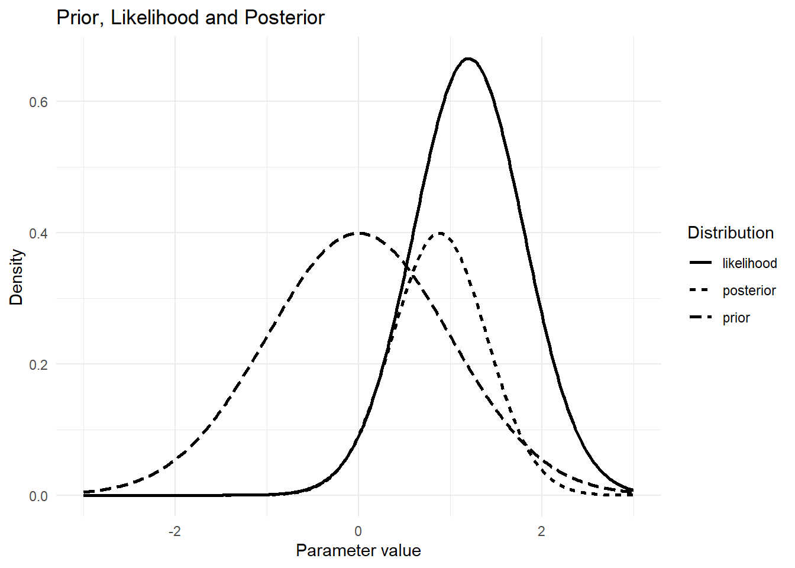
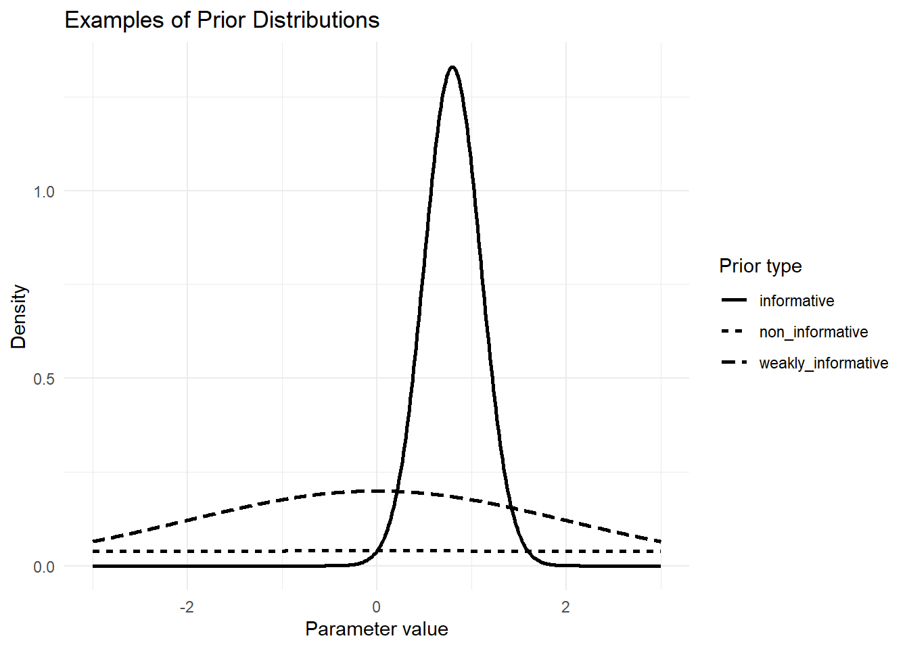
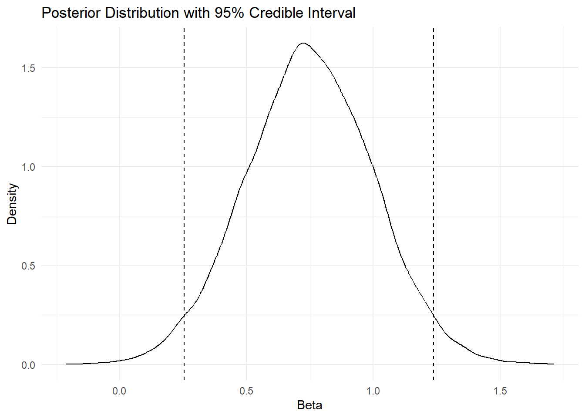
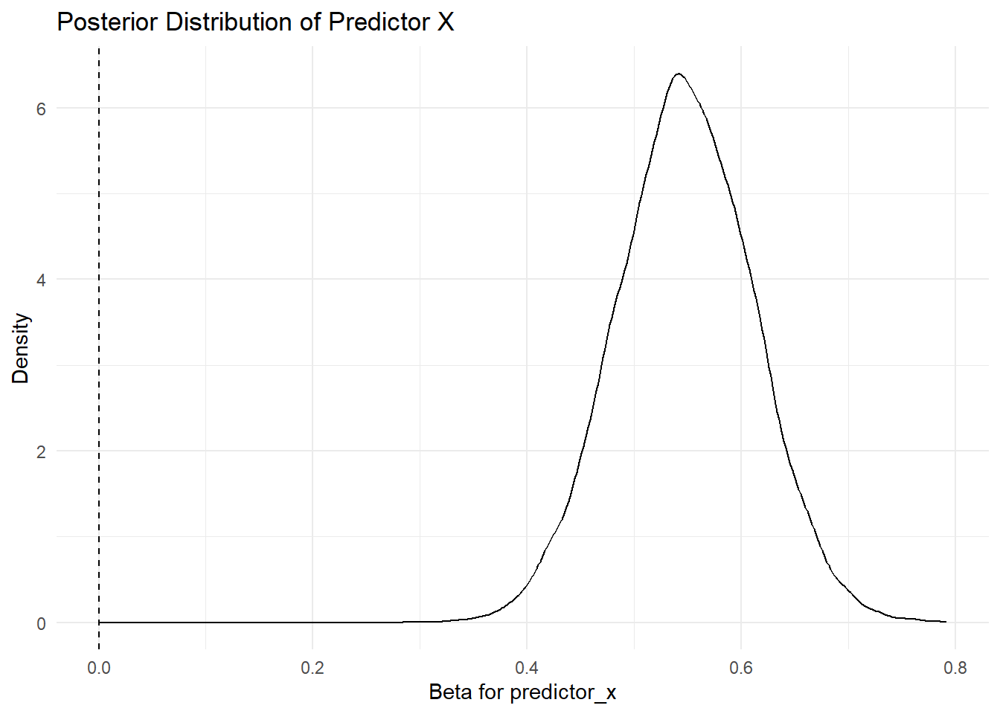
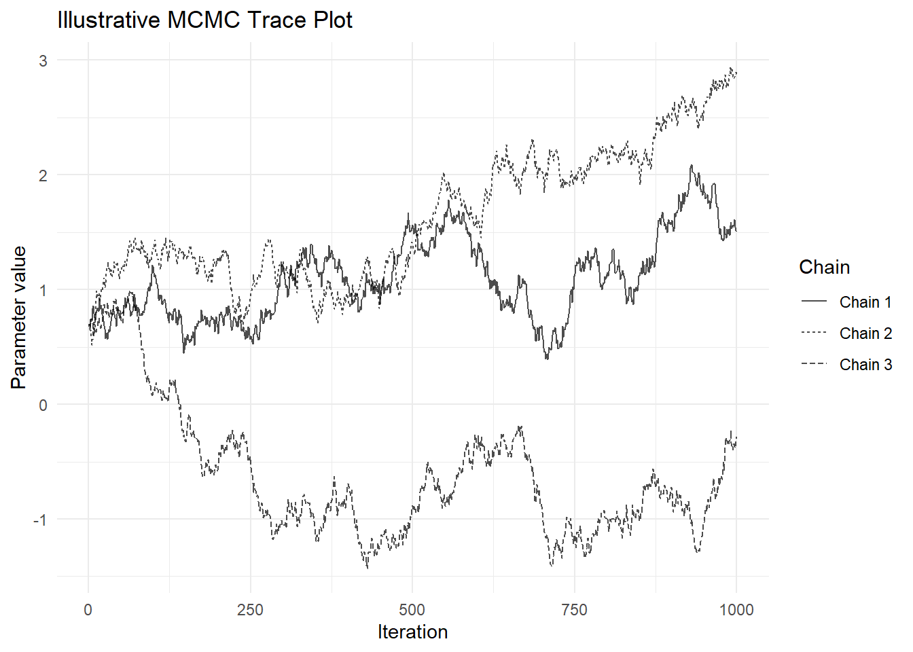
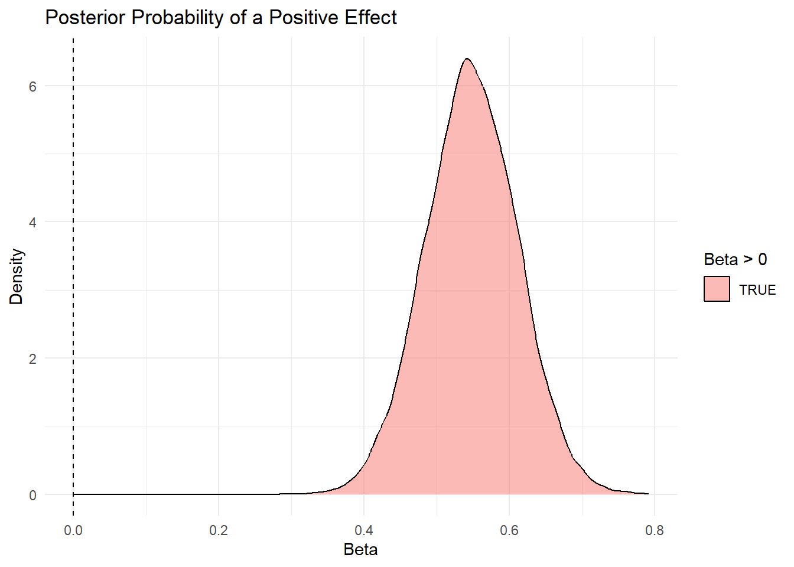
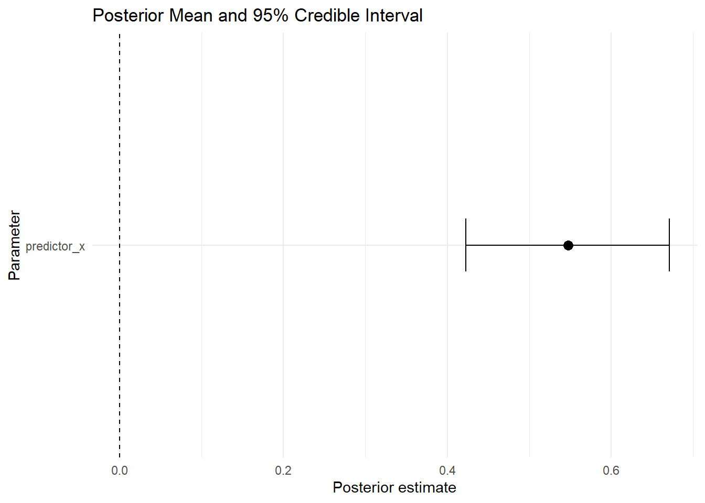

flowchart LR A[Prior Belief] --> B[Observed Data] B --> C[Likelihood] C --> D[Posterior Distribution] D --> E[Credible Interval] E --> F[Research Interpretation]
Advanced 05. Thống kê Bayes
Bayesian Statistics with R
Tổng quan bài học
TipKết quả học tập (Learning Outcomes)
Sau khi hoàn thành bài học này, học viên có thể:
- Hiểu tư duy thống kê Bayes (Bayesian Statistics)
- Phân biệt thống kê tần suất (Frequentist Statistics) và thống kê Bayes
- Hiểu prior, likelihood và posterior
- Hiểu khoảng tin cậy Bayes (Credible Interval)
- Mô phỏng phân phối posterior bằng R
- Chạy hồi quy Bayes cơ bản bằng
rstanarmnếu package đã được cài - Kiểm tra trực quan posterior distribution
- Hiểu chẩn đoán MCMC ở mức nhập môn
- Viết kết quả Bayes theo chuẩn học thuật
- Tránh các sai lầm phổ biến khi dùng Bayesian analysis
NoteLogic bài học (Module Logic)
Bài học này trả lời câu hỏi:
Thống kê Bayes giúp chúng ta cập nhật niềm tin về tham số như thế nào sau khi quan sát dữ liệu?
Quy trình:
Prior Belief
↓
Observed Data
↓
Likelihood
↓
Posterior Belief
↓
Credible Interval
↓
Decision and ReportingMinh họa tư duy Bayes
1. Vì sao cần thống kê Bayes?
NoteKiến thức nền tảng (Knowledge Notes)
Là gì? (What?)
Thống kê Bayes (Bayesian Statistics) là cách tiếp cận thống kê trong đó nhà nghiên cứu cập nhật niềm tin ban đầu về một tham số sau khi quan sát dữ liệu.
Tại sao cần? (Why?)
Bayesian analysis hữu ích vì nó cho phép:
- Kết hợp dữ liệu mới với kiến thức trước đó
- Diễn giải kết quả dưới dạng xác suất trực quan hơn
- Làm việc tốt trong một số tình huống mẫu nhỏ
- Trình bày uncertainty bằng posterior distribution
- Trả lời câu hỏi xác suất về tham số
Khi nào dùng? (When?)
Dùng khi:
- Có kiến thức trước từ nghiên cứu trước
- Cần diễn giải xác suất trực tiếp
- Cần mô hình hóa uncertainty rõ ràng
- Cần mô hình linh hoạt hơn frequentist methods
- Muốn dùng simulation-based inference
Thực hiện thế nào? (How?)
Bayesian analysis dùng công thức:
Posterior ∝ Prior × Likelihood
ImportantỨng dụng trong nghiên cứu (Research Application)
Thống kê Bayes có thể dùng trong:
- Nghiên cứu giáo dục
- Nghiên cứu hành vi
- Nghiên cứu y tế
- Nghiên cứu quản trị
- Dự đoán adoption hoặc usage
- Nghiên cứu có mẫu nhỏ
- Nghiên cứu cần kết hợp bằng chứng trước đó
WarningSai lầm thường gặp (Common Mistakes)
Người học thường mắc lỗi:
- Dùng Bayesian chỉ vì nghe hiện đại
- Chọn prior quá mạnh nhưng không giải thích
- Không kiểm tra convergence
- Nhầm credible interval với confidence interval
- Diễn giải posterior quá mức
- Không báo cáo prior đã dùng
2. Chuẩn bị dữ liệu
NoteKiến thức nền tảng (Knowledge Notes)
Dữ liệu sử dụng
data/advance/module7_advanced_data.xlsxSheet sử dụng:
05_Bayesian_MonteCarloTrong module này, ta dùng phần dữ liệu Bayes để minh họa:
- Prior
- Likelihood
- Posterior
- Bayesian regression
- Posterior visualization
Cài đặt package
install.packages("tidyverse")
install.packages("readxl")
install.packages("janitor")
install.packages("bayesplot")
install.packages("posterior")
install.packages("rstanarm")
install.packages("gt")
install.packages("patchwork")Nạp package
library(tidyverse)
library(readxl)
library(janitor)
library(gt)
library(patchwork)Thiết lập đường dẫn dữ liệu
advanced_file <- if (file.exists("../data/advance/module7_advanced_data.xlsx")) {
"../data/advance/module7_advanced_data.xlsx"
} else if (file.exists("../data/advanced/module7_advanced_data.xlsx")) {
"../data/advanced/module7_advanced_data.xlsx"
} else if (file.exists("data/advance/module7_advanced_data.xlsx")) {
"data/advance/module7_advanced_data.xlsx"
} else {
"data/advanced/module7_advanced_data.xlsx"
}Nhập dữ liệu
bayes_data <- read_excel(
advanced_file,
sheet = "05_Bayesian_MonteCarlo"
) |>
clean_names()Kiểm tra dữ liệu
glimpse(bayes_data)Rows: 1,000
Columns: 12
$ draw_id <dbl> 1, 2, 3, 4, 5, 6, 7, 8, 9, 10, 11, 12, 13, 14, 15, 1…
$ scenario <chr> "weak_prior", "skeptical_prior", "strong_prior", "op…
$ group <chr> "treatment", "treatment", "control", "control", "tre…
$ n <dbl> 200, 200, 200, 200, 50, 50, 30, 200, 50, 100, 50, 20…
$ true_effect <dbl> 0.35, 0.35, 0.00, 0.00, 0.35, 0.00, 0.35, 0.35, 0.00…
$ prior_mean <dbl> 0.0, 0.0, 0.3, 0.5, 0.5, 0.0, 0.0, 0.0, 0.5, 0.0, 0.…
$ prior_sd <dbl> 1.00, 0.25, 0.20, 0.30, 0.30, 0.25, 0.25, 1.00, 0.30…
$ observed_mean <dbl> 0.385, 0.457, -0.100, 0.000, 0.271, -0.193, 0.536, 0…
$ observed_sd <dbl> 0.826, 0.997, 0.994, 1.287, 0.902, 1.037, 0.991, 1.2…
$ successes <dbl> 108, 113, 96, 88, 21, 25, 17, 96, 22, 42, 20, 123, 8…
$ trials <dbl> 200, 200, 200, 200, 50, 50, 30, 200, 50, 100, 50, 20…
$ simulated_outcome <dbl> -0.355, 0.728, -1.304, -0.033, -0.557, 0.514, 0.877,…names(bayes_data) [1] "draw_id" "scenario" "group"
[4] "n" "true_effect" "prior_mean"
[7] "prior_sd" "observed_mean" "observed_sd"
[10] "successes" "trials" "simulated_outcome"Tạo dữ liệu minh họa ổn định cho Bayesian regression
set.seed(123)
bayes_model_data <- tibble(
predictor_x = rnorm(300, mean = 0, sd = 1),
predictor_z = rnorm(300, mean = 0, sd = 1),
observed_mean = 2 +
0.60 * predictor_x -
0.25 * predictor_z +
rnorm(300, mean = 0, sd = 1)
)
glimpse(bayes_model_data)Rows: 300
Columns: 3
$ predictor_x <dbl> -0.56047565, -0.23017749, 1.55870831, 0.07050839, 0.1292…
$ predictor_z <dbl> -0.7152422, -0.7526890, -0.9385387, -1.0525133, -0.43715…
$ observed_mean <dbl> 2.9165374, 2.0227188, 3.1365293, 0.7893657, 2.9772479, 2…3. Frequentist và Bayesian khác nhau thế nào?
TipKết quả học tập (Learning Outcomes)
Sau phần này, học viên có thể:
- Phân biệt tư duy frequentist và Bayesian
- Hiểu vì sao Bayesian cho phép nói về xác suất của tham số
- Biết khi nào Bayesian interpretation dễ hiểu hơn
NoteKiến thức nền tảng (Knowledge Notes)
Frequentist Statistics
Trong thống kê tần suất, tham số thường được xem là giá trị cố định nhưng chưa biết. Dữ liệu được xem là ngẫu nhiên.
Bayesian Statistics
Trong thống kê Bayes, tham số được xem là bất định và có thể được mô tả bằng phân phối xác suất.
So sánh nhanh
| Nội dung | Frequentist | Bayesian |
|---|---|---|
| Tham số | Cố định nhưng chưa biết | Có phân phối xác suất |
| Dữ liệu | Ngẫu nhiên | Đã quan sát |
| Khoảng ước lượng | Confidence Interval | Credible Interval |
| Diễn giải | Dựa trên lặp lại dài hạn | Dựa trên xác suất posterior |
| Kiến thức trước | Ít đưa trực tiếp | Đưa vào qua prior |
ImportantVí dụ diễn giải (Interpretation Example)
Frequentist thường nói:
Nếu lặp lại nghiên cứu nhiều lần, 95% khoảng tin cậy được tạo ra sẽ chứa tham số thật.Bayesian có thể nói:
Với dữ liệu và prior đã dùng, có 95% xác suất tham số nằm trong khoảng credible interval.4. Prior, Likelihood và Posterior
TipKết quả học tập (Learning Outcomes)
Sau phần này, học viên có thể:
- Hiểu prior
- Hiểu likelihood
- Hiểu posterior
- Vẽ minh họa prior và posterior bằng R
NoteKiến thức nền tảng (Knowledge Notes)
Prior là gì?
Prior là niềm tin hoặc thông tin trước khi quan sát dữ liệu.
Likelihood là gì?
Likelihood cho biết dữ liệu quan sát được phù hợp như thế nào với các giá trị tham số khác nhau.
Posterior là gì?
Posterior là niềm tin sau khi kết hợp prior và dữ liệu.
Minh họa bằng dữ liệu mô phỏng
set.seed(123)
theta_grid <- seq(-3, 3, length.out = 500)
prior <- dnorm(theta_grid, mean = 0, sd = 1)
likelihood <- dnorm(theta_grid, mean = 1.2, sd = 0.6)
posterior_unnormalized <- prior * likelihood
posterior <- posterior_unnormalized / max(posterior_unnormalized) * max(prior)
bayes_demo <- tibble(
theta = theta_grid,
prior = prior,
likelihood = likelihood,
posterior = posterior
) |>
pivot_longer(
cols = c(prior, likelihood, posterior),
names_to = "distribution",
values_to = "density"
)Vẽ prior, likelihood và posterior
ggplot(bayes_demo, aes(x = theta, y = density, linetype = distribution)) +
geom_line(linewidth = 1) +
labs(
title = "Prior, Likelihood and Posterior",
x = "Parameter value",
y = "Density",
linetype = "Distribution"
) +
theme_minimal()
- Prior là thông tin trước dữ liệu.
- Likelihood đến từ dữ liệu.
- Posterior là kết quả sau khi cập nhật.
- Posterior là trung tâm của Bayesian inference.
5. Các loại prior
TipKết quả học tập (Learning Outcomes)
Sau phần này, học viên có thể:
- Phân biệt weakly informative prior và informative prior
- Biết khi nào nên dùng prior mạnh hoặc yếu
- Hiểu vì sao prior cần được báo cáo minh bạch
NoteKiến thức nền tảng (Knowledge Notes)
Non-informative prior
Prior rất rộng, ít ảnh hưởng đến kết quả.
Weakly informative prior
Prior có định hướng nhẹ, giúp mô hình ổn định nhưng không áp đặt quá mạnh.
Informative prior
Prior dựa trên bằng chứng mạnh từ nghiên cứu trước hoặc chuyên gia.
Minh họa ba loại prior
prior_demo <- tibble(
theta = theta_grid,
non_informative = dnorm(theta_grid, 0, 10),
weakly_informative = dnorm(theta_grid, 0, 2),
informative = dnorm(theta_grid, 0.8, 0.3)
) |>
pivot_longer(
cols = -theta,
names_to = "prior_type",
values_to = "density"
)ggplot(prior_demo, aes(x = theta, y = density, linetype = prior_type)) +
geom_line(linewidth = 1) +
labs(
title = "Examples of Prior Distributions",
x = "Parameter value",
y = "Density",
linetype = "Prior type"
) +
theme_minimal()
WarningSai lầm thường gặp (Common Mistakes)
Không nên dùng informative prior nếu không có lý do rõ ràng.
Nếu dùng prior mạnh, cần giải thích:
- Nguồn prior từ đâu?
- Dựa trên nghiên cứu nào?
- Có kiểm tra sensitivity analysis không?
6. Credible Interval và Confidence Interval
TipKết quả học tập (Learning Outcomes)
Sau phần này, học viên có thể:
- Hiểu credible interval
- Phân biệt credible interval và confidence interval
- Diễn giải credible interval đúng cách
NoteKiến thức nền tảng (Knowledge Notes)
Credible Interval là gì?
Khoảng tin cậy Bayes (Credible Interval) là khoảng chứa một tỷ lệ xác suất posterior nhất định của tham số.
Confidence Interval là gì?
Confidence Interval là khái niệm frequentist dựa trên ý tưởng lặp lại nghiên cứu nhiều lần.
| Nội dung | Confidence Interval | Credible Interval |
|---|---|---|
| Cách tiếp cận | Frequentist | Bayesian |
| Diễn giải | Dài hạn qua lặp lại | Xác suất trực tiếp |
| Có thể nói tham số có 95% xác suất trong khoảng? | Không | Có |
| Phụ thuộc prior? | Không trực tiếp | Có |
Tính credible interval từ posterior mô phỏng
set.seed(123)
posterior_draws <- rnorm(
10000,
mean = 0.75,
sd = 0.25
)
credible_interval <- quantile(
posterior_draws,
probs = c(0.025, 0.975)
)
credible_interval 2.5% 97.5%
0.2556822 1.2377829 Vẽ posterior và credible interval
posterior_df <- tibble(beta = posterior_draws)
ggplot(posterior_df, aes(x = beta)) +
geom_density() +
geom_vline(xintercept = credible_interval, linetype = "dashed") +
labs(
title = "Posterior Distribution with 95% Credible Interval",
x = "Beta",
y = "Density"
) +
theme_minimal()
ImportantDiễn giải kết quả (Interpretation)
Có thể viết:
Với dữ liệu và prior đã dùng, có 95% xác suất hệ số nằm trong khoảng [0.26, 1.24].Không nên dùng cách diễn giải này cho confidence interval frequentist.
7. Bayesian Regression bằng mô phỏng đơn giản
TipKết quả học tập (Learning Outcomes)
Sau phần này, học viên có thể:
- Hiểu posterior của hệ số hồi quy
- Mô phỏng posterior draws
- Trực quan hóa posterior coefficient
- Viết diễn giải xác suất
NoteKiến thức nền tảng (Knowledge Notes)
Trong mô hình hồi quy Bayes, mỗi hệ số có một posterior distribution.
Thay vì chỉ có một estimate và p-value, ta có phân phối của hệ số.
Mô hình frequentist để lấy điểm khởi đầu
freq_model <- lm(
observed_mean ~ predictor_x + predictor_z,
data = bayes_model_data
)
summary(freq_model)
Call:
lm(formula = observed_mean ~ predictor_x + predictor_z, data = bayes_model_data)
Residuals:
Min 1Q Median 3Q Max
-2.5248 -0.7438 0.0371 0.6841 2.6195
Coefficients:
Estimate Std. Error t value Pr(>|t|)
(Intercept) 2.01881 0.05979 33.762 < 2e-16 ***
predictor_x 0.54781 0.06340 8.641 3.51e-16 ***
predictor_z -0.29465 0.06064 -4.859 1.91e-06 ***
---
Signif. codes: 0 '***' 0.001 '**' 0.01 '*' 0.05 '.' 0.1 ' ' 1
Residual standard error: 1.035 on 297 degrees of freedom
Multiple R-squared: 0.2589, Adjusted R-squared: 0.2539
F-statistic: 51.88 on 2 and 297 DF, p-value: < 2.2e-16Tạo posterior mô phỏng từ hệ số frequentist
coef_table <- summary(freq_model)$coefficients
beta_x_mean <- coef_table["predictor_x", "Estimate"]
beta_x_se <- coef_table["predictor_x", "Std. Error"]
set.seed(123)
beta_x_posterior <- rnorm(
10000,
mean = beta_x_mean,
sd = beta_x_se
)
beta_x_summary <- tibble(
mean = mean(beta_x_posterior),
median = median(beta_x_posterior),
lower_95 = quantile(beta_x_posterior, 0.025),
upper_95 = quantile(beta_x_posterior, 0.975),
prob_positive = mean(beta_x_posterior > 0)
)
beta_x_summaryVẽ posterior của hệ số
tibble(beta_x = beta_x_posterior) |>
ggplot(aes(x = beta_x)) +
geom_density() +
geom_vline(xintercept = 0, linetype = "dashed") +
labs(
title = "Posterior Distribution of Predictor X",
x = "Beta for predictor_x",
y = "Density"
) +
theme_minimal()
ImportantDiễn giải kết quả (Interpretation)
Nếu prob_positive = 0.97, có thể viết:
The posterior probability that the coefficient of predictor_x is positive was 0.97.Cách diễn giải này khác với p-value.
8. Bayesian Regression bằng rstanarm
TipKết quả học tập (Learning Outcomes)
Sau phần này, học viên có thể:
- Biết cách chạy Bayesian regression bằng
rstanarm - Hiểu vì sao chunk này có thể cần thời gian chạy lâu hơn
- Biết cách đặt
eval: falsenếu máy chưa cài package
NoteKiến thức nền tảng (Knowledge Notes)
rstanarm là package giúp chạy mô hình Bayes với cú pháp gần giống lm() và glm().
Tuy nhiên, package này có thể cần cài đặt backend Stan và chạy chậm hơn các mô hình thông thường.
Vì vậy, trong khóa học, phần này để eval: false nhằm tránh lỗi render nếu máy chưa cài rstanarm.
Bayesian linear regression
library(rstanarm)
bayes_lm <- stan_glm(
observed_mean ~ predictor_x + predictor_z,
data = bayes_model_data,
family = gaussian(),
prior = normal(0, 2),
prior_intercept = normal(0, 5),
chains = 2,
iter = 1000,
seed = 123
)
summary(bayes_lm)Posterior intervals
posterior_interval(
bayes_lm,
prob = 0.95
)Posterior plot
plot(bayes_lm)
WarningSai lầm thường gặp (Common Mistakes)
Nếu máy chưa cài rstanarm, không nên bật eval: true.
Với khóa học public, nên giữ phần này là code tham khảo, còn mô phỏng posterior ở Section 7 là phần render ổn định.
9. Bayesian Logistic Regression
TipKết quả học tập (Learning Outcomes)
Sau phần này, học viên có thể:
- Hiểu Bayesian Logistic Regression
- Biết khi nào dùng mô hình Bernoulli
- Thấy cú pháp cơ bản bằng
rstanarm
NoteKiến thức nền tảng (Knowledge Notes)
Bayesian Logistic Regression dùng khi outcome là nhị phân.
Ví dụ:
0 = No
1 = YesTrong rstanarm, có thể dùng:
family = binomial()bayes_logit <- stan_glm(
binary_outcome ~ predictor_x + predictor_z,
data = bayes_model_data,
family = binomial(),
prior = normal(0, 2),
prior_intercept = normal(0, 5),
chains = 2,
iter = 1000,
seed = 123
)
summary(bayes_logit)
ImportantDiễn giải kết quả (Interpretation)
Trong Bayesian Logistic Regression, hệ số posterior thường ở dạng log-odds.
Có thể chuyển sang odds ratio bằng:
exp(coef)10. MCMC Diagnostics
TipKết quả học tập (Learning Outcomes)
Sau phần này, học viên có thể:
- Hiểu MCMC ở mức nhập môn
- Biết Rhat là gì
- Biết Effective Sample Size là gì
- Hiểu trace plot dùng để làm gì
NoteKiến thức nền tảng (Knowledge Notes)
MCMC là gì?
MCMC (Markov Chain Monte Carlo) là phương pháp mô phỏng để lấy mẫu từ posterior distribution.
Rhat là gì?
Rhat giúp kiểm tra các chains đã hội tụ hay chưa.
Quy tắc thường dùng:
Rhat < 1.01Effective Sample Size là gì?
Effective Sample Size cho biết số lượng mẫu posterior hiệu quả sau khi xét đến tương quan giữa draws.
Minh họa trace plot bằng dữ liệu mô phỏng
set.seed(123)
mcmc_demo <- tibble(
iteration = rep(1:1000, 3),
chain = rep(c("Chain 1", "Chain 2", "Chain 3"), each = 1000),
value = c(
cumsum(rnorm(1000, 0, 0.05)) + 0.7,
cumsum(rnorm(1000, 0, 0.05)) + 0.75,
cumsum(rnorm(1000, 0, 0.05)) + 0.72
)
)
ggplot(mcmc_demo, aes(x = iteration, y = value, linetype = chain)) +
geom_line(alpha = 0.7) +
labs(
title = "Illustrative MCMC Trace Plot",
x = "Iteration",
y = "Parameter value",
linetype = "Chain"
) +
theme_minimal()
WarningSai lầm thường gặp (Common Mistakes)
Không nên chỉ đọc posterior summary mà bỏ qua convergence diagnostics.
Nếu chains chưa hội tụ, kết quả Bayesian có thể không đáng tin cậy.
11. Posterior Predictive Check
TipKết quả học tập (Learning Outcomes)
Sau phần này, học viên có thể:
- Hiểu posterior predictive check
- Biết mục tiêu của
pp_check() - Hiểu vì sao Bayesian không chỉ nhìn hệ số
NoteKiến thức nền tảng (Knowledge Notes)
Posterior predictive check kiểm tra liệu mô hình có thể tạo ra dữ liệu mô phỏng giống với dữ liệu quan sát hay không.
Nếu dữ liệu mô phỏng từ posterior khác xa dữ liệu thật, mô hình có thể chưa phù hợp.
pp_check(bayes_lm)
ImportantDiễn giải kết quả (Interpretation)
Nếu posterior predictive distribution tương tự dữ liệu quan sát, mô hình có thể mô tả dữ liệu tốt hơn.
Nếu khác biệt lớn, cần xem lại:
- Mô hình
- Biến đưa vào
- Prior
- Phân phối outcome
- Outliers
12. Bayes Factor
TipKết quả học tập (Learning Outcomes)
Sau phần này, học viên có thể:
- Hiểu Bayes Factor
- Biết cách diễn giải BF10
- Biết hạn chế của Bayes Factor
NoteKiến thức nền tảng (Knowledge Notes)
Bayes Factor so sánh mức độ bằng chứng giữa hai mô hình hoặc hai giả thuyết.
Ví dụ:
BF10 = evidence for H1 relative to H0Quy tắc tham khảo:
| BF10 | Diễn giải |
|---|---|
| 1–3 | Bằng chứng yếu |
| 3–10 | Bằng chứng vừa |
| > 10 | Bằng chứng mạnh |
| > 30 | Bằng chứng rất mạnh |
WarningSai lầm thường gặp (Common Mistakes)
Bayes Factor nhạy với prior.
Không nên báo cáo Bayes Factor mà không nói rõ mô hình và prior.
13. Trực quan hóa Bayesian
TipKết quả học tập (Learning Outcomes)
Sau phần này, học viên có thể:
- Vẽ posterior density
- Vẽ posterior interval
- Vẽ xác suất hệ số dương hoặc âm
- Dùng visualization để diễn giải kết quả Bayes
Posterior area plot
posterior_area <- tibble(beta = beta_x_posterior) |>
mutate(
positive = beta > 0
)
ggplot(posterior_area, aes(x = beta, fill = positive)) +
geom_density(alpha = 0.5) +
geom_vline(xintercept = 0, linetype = "dashed") +
labs(
title = "Posterior Probability of a Positive Effect",
x = "Beta",
y = "Density",
fill = "Beta > 0"
) +
theme_minimal()
Posterior interval plot
posterior_interval_df <- tibble(
parameter = "predictor_x",
mean = mean(beta_x_posterior),
lower = quantile(beta_x_posterior, 0.025),
upper = quantile(beta_x_posterior, 0.975)
)
ggplot(posterior_interval_df, aes(x = mean, y = parameter)) +
geom_point(size = 3) +
geom_errorbarh(aes(xmin = lower, xmax = upper), height = 0.15) +
geom_vline(xintercept = 0, linetype = "dashed") +
labs(
title = "Posterior Mean and 95% Credible Interval",
x = "Posterior estimate",
y = "Parameter"
) +
theme_minimal()
Bayesian visualization giúp người đọc hiểu uncertainty tốt hơn so với chỉ nhìn bảng số liệu.
14. Viết kết quả học thuật
NoteKiến thức nền tảng (Knowledge Notes)
Là gì? (What?)
Viết kết quả Bayesian cần báo cáo:
- Mô hình đã dùng
- Prior
- Posterior estimate
- Credible interval
- Probability statement nếu phù hợp
- Diagnostics nếu có MCMC
Template Bayesian regression
A Bayesian regression model was estimated using weakly informative priors. The posterior distribution suggested a positive association between predictor_x and the outcome, with a posterior mean of [value] and a 95% credible interval of [lower, upper].Template probability statement
The posterior probability that the coefficient of predictor_x was positive was [probability], suggesting strong evidence for a positive association under the specified model and prior.Template MCMC reporting
Model convergence was assessed using trace plots and Rhat values. All Rhat values were below 1.01, indicating acceptable convergence.
WarningSai lầm thường gặp (Common Mistakes)
Không nên viết:
The Bayesian model proved the hypothesis.Nên viết:
The posterior distribution provided evidence consistent with the hypothesized positive association.15. Bài tập thực hành
ImportantBài tập thực hành (Practice Exercise)
Sử dụng dữ liệu minh họa trong module và sheet 05_Bayesian_MonteCarlo, hãy thực hiện:
- Nhập dữ liệu.
- Vẽ prior, likelihood và posterior.
- Tạo posterior draws cho một hệ số.
- Tính credible interval 95%.
- Tính xác suất posterior rằng hệ số lớn hơn 0.
- Vẽ posterior density.
- Vẽ posterior interval plot.
- So sánh confidence interval và credible interval.
- Nếu máy có
rstanarm, chạy Bayesian regression. - Viết một đoạn kết quả Bayesian.
16. Thử thách
WarningThử thách (Challenge)
Tình huống
Một nhà nghiên cứu chạy mô hình Bayesian regression và nhận được:
Posterior mean = 0.42
95% CrI = [0.10, 0.76]
P(beta > 0) = 0.98Câu hỏi
- Kết quả này nên diễn giải thế nào?
- Có thể nói hệ số có 98% xác suất dương không?
- Có nên gọi đây là bằng chứng nhân quả không?
- Cần báo cáo thêm thông tin gì?
- Prior có vai trò gì?
TipGợi ý trả lời (Suggested Solution)
Một câu trả lời tốt nên nêu:
- Posterior mean là 0.42.
- 95% credible interval nằm hoàn toàn trên 0.
- Có thể nói xác suất posterior rằng hệ số dương là 0.98.
- Không nên tự động diễn giải là quan hệ nhân quả.
- Cần báo cáo prior, mô hình, diagnostics và dữ liệu sử dụng.
17. Dự án nhỏ
ImportantDự án nhỏ (Mini Project)
Chủ đề
Bayesian Analysis Report
Sản phẩm đầu ra
Học viên cần tạo:
Bayesian_Analysis_Report.htmlNội dung báo cáo
- Research question
- Prior specification
- Data overview
- Posterior simulation
- Credible interval
- Posterior probability
- Bayesian regression example
- Posterior visualization
- Academic interpretation
- Limitations and next steps
18. Điểm cần ghi nhớ
- Bayesian analysis cập nhật prior bằng dữ liệu để tạo posterior.
- Posterior distribution là trung tâm của Bayesian inference.
- Credible interval khác confidence interval.
- Bayesian results cần báo cáo prior.
- MCMC diagnostics rất quan trọng khi dùng mô hình Bayesian thật.
- Bayesian không tự động tốt hơn frequentist; nó phù hợp cho một số câu hỏi nhất định.
- Không nên dùng Bayesian chỉ vì xu hướng.
- Diễn giải Bayesian cần minh bạch về model, prior và dữ liệu.
19. Bước tiếp theo
NoteBước tiếp theo (What Next?)
Sau khi hoàn thành phần này, học viên nên:
- Hiểu prior, likelihood và posterior.
- Biết diễn giải credible interval.
- Biết trực quan hóa posterior distribution.
- Biết khi nào cần kiểm tra MCMC diagnostics.
- Chuyển sang:
Trong phần tiếp theo, chúng ta sẽ học mô phỏng Monte Carlo, bootstrap và cách dùng simulation để hiểu uncertainty.